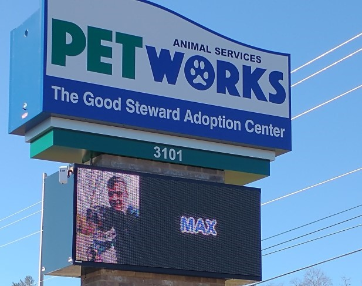

I'm the guy who finds the dog at a party, ignores the humans, and spends my evening playing with Scooby.
All dogs are awesome, but pit bulls have a special place in my heart, because they're the #1 most misunderstood breed.
Despite the dishonest claims of biased news stories and flawed studies, I've never met a pit bull with an aggressive bone in their body.
Sure, they might not like cats. And they may prefer living in a home where they can get ALL the attention. But they've never bit me or anything (and I've walked about a hundred).
Petworks -- the animal shelter whose newsletter is pictured above -- also put me on their sign.
And there's a good reason.
Over the last two years, I've walked 156 dogs.
After each walk, I promote the dogs with a Facebook status about their unique personality.
150 of those dogs found a home. Can't claim full credit, but I bet the 18,437 social media shares helped.
Not to mention the 379,576 people reached, which equals the population of Kingsport times seven (and counting).
I was in a dark and distressing place before I found purpose at the shelter.
This isn't the appropriate time or place to get deeper into that issue; suffice to say, I fell into a pit of despair.
The dogs helped me climb out and find the light. They didn't care about my past mistakes. Their love was unconditional.
Dogs are also content as heck. They don't expect any grand gestures. A drive with the windows down, walk at the park, and belly rubs are enough to make them happy.
Over the last two years, I've intentionally adopted a dog's perspective on life, and it's been a transformative experience.
Like dogs, I'm more content. As long as I get some food and exercise, I'm happy, although a little love and affection never hurts.
No dog will argue about politics or religion. And neither do I. Most people are too attached to their opinions. It causes division. So I try not to have opinions at all.
We've had 20,000+ visitors since June.
5,000+ folks shared blogs, resources, or pet profiles.
Every single share helps dogs and cats find forever homes faster.
The most popular blog is In Memory of Dixie (a memorial about a past dog).
If you want to raise awareness for the animals, share this post before you go.
Shelter Dog Stories
Pet Adoption Resources
Dogs and Cats in Kingsport, TN
© 2021, All Rights Reserved
Daniel Wallen, Dogfather Digital